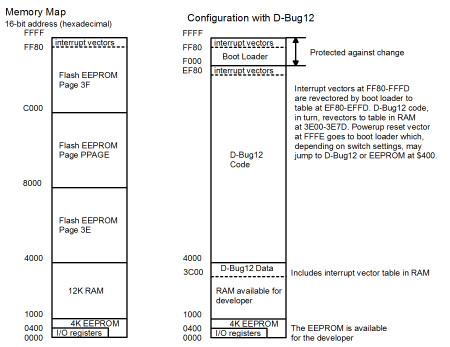
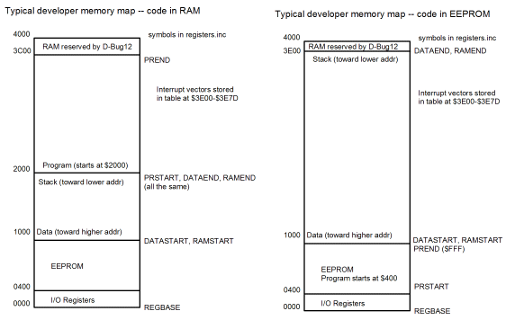
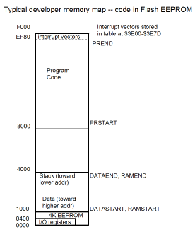

| Previous Appendix | Next Appendix | Index | Search the Text |
The following guide is for making standalone applications which run on the Dragon12-plus board; however the information applies in general. When doing development work, the program code is typically stored in RAM when it can be easily modified. However in the final application, the code needs to be in non-volatile memory. In addition, during development the program relies on system initialization via D-Bug12. The final application code is run directly after power-up so must handle all system initialization.
|
The MC9S12DG256B in the Dragon12-Plus has the memory map shown on the right. On the right side is the memory usage when D-Bug12 is installed. Interrupts are handled by the boot loader, which jumps to the corresponding interrupt routine in the interrupt table at $EF80-$EFFF. This table is maintained by D-Bug12, which in turn jumps to the corresponding interrupt routine provided in a RAM-based table, allowing developer applications to provide interrupt routines without reprogramming the flash memory. The developer has available RAM from $1000 to $3C00 and EEPROM from $400 to $FFF. |
 |
The file registers.inc provides definitions for program code and data areas in a program. The map on the left, below, shows how the RAM is divided for program, data variables, and stack when an application is loaded in RAM and executed using D-Bug12.

In a standalone application all program code and constants must be in ROM or other non-volatile memory. In the Dragon12-plus board, this means the on-chip EEPROM memory or Flash ROM memory. It is easier to use the EEPROM memory using the memory map on the right in the figure above. EEPROM is available from location $400 through $FFF. EEPROM from $000 to $3FF is hidden by the register block, which could be moved if necessary to increase the amount of available EEPROM. When the board is set to boot to the EEPROM, the boot loader will jump to location $400 and the D-Bug12 debugger program will be ignored. Available RAM memory locations are $1000 through $3DFF.
Because the interrupt vectors are still in flash ROM, they are "revectored" to location $3E00-$3E7F. Any application interrupt vectors must be stored in this array during initialization, just like they are in a D-Bug12 based program.
Normally the D-Bug12 program initializes the evaluation board, however in a standalone application, the application code must do any necessary initialization. Consider the following:
movb #2 SYNR ; Set multiplier to 3x
xx: brclr CRGFLG #$8 xx ; wait for PLL to lock
movb #$80 CLKSEL ; Enable the PLL.
For systems with 4 MHz crystals, the multiplication factor is 6,
and the value of SYNR would be 5.
When the program is assembled, it will want to load into the EEPROM $400-$FFF address. The D-Bug12 LOAD command is capable of loading EEPROM directly in most systems, including the Dragon12-plus. WARNING: DO NOT WRITE TO THE ENTIRE EEPROM, BUT ONLY TO THE LOCATIONS YOU USE. Byte location $FFD is a "protection" byte and writing to it may make it impossible to write to the EEPROM again (without a recovery procedure which requires two boards and use of BDM mode). Once the EEPROM is programmed, the application can be run by changing the dip switches so the boot loader jumps to EEPROM rather than starting D-BUG12.
|
If the application is to be run from the flash memory (because, for instance, it requires more than 4K of ROM) then the vector table must be set up in the flash ROM at $FFF80 to $FFFFF, or at $FEF80 to $FEFFF if the boot loader is still present. The (16 bit) start address is specified in the vector table. Programming the flash memory will remove D-Bug12. The registers.inc file has memory map definitions for operation with the 68HCS12 boot loader present. The definition "DBUG12MAP equ 0" must be changed to "FLASHMAP equ 0". In this case the interrupt vectors are stored in a table in flash memory starting at EF80 and must be initialized using DW assembler directives. The reset vector at $EFFE must also be set to the start of the program execution. Additional consideration must be given to the memory bank switching. In general, applications that are intended to be loaded in flash memory should be created using a commercial assembler or compiler tools that can handle the bank switching. |  |
Continue with Frequency Meter Example
Return to the Index.